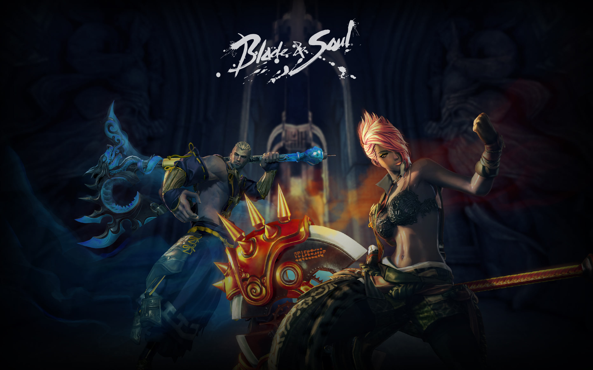

Sát Thủ tiêu hao sinh lực địch bằng những đòn tấn công chớp nhoáng, hạ độc và làm cho vết thương chảy máu không ngừng. Bí kíp lợi hại nhất của những Sát Thủ chính là những chiêu thức biến ảo khiến họ trở nên vô hình trước mắt kẻ thù, thoắt ẩn thoắt hiện trên chiến trường và thậm chí là hoán đổi vị trí với đối thủ.
Trong các hệ phái, Sát Thủ mạnh nhất khi hoạt động đơn lẻ. Tuy nhiên, những chiêu thức biến hình và gây sát thương liên tục của hệ phái này vẫn có tầm ảnh hưởng cực kỳ quan trọng với những trận chiến lớn.
Đúng như tên gọi của mình, Cuồng Long sở hữu kỹ năng hủy diệt mạnh nhất của Blade and Soul. Thể hình ngoại cỡ thường khiến họ trở thành mục tiêu tấn công chính của kẻ thù. Tuy nhiên, dù cho kẻ thù dù hung hãn đến đâu, những Cuồng Long vẫn có thể dễ dàng loại bỏ những kẻ đang cố gắng cản bước họ.